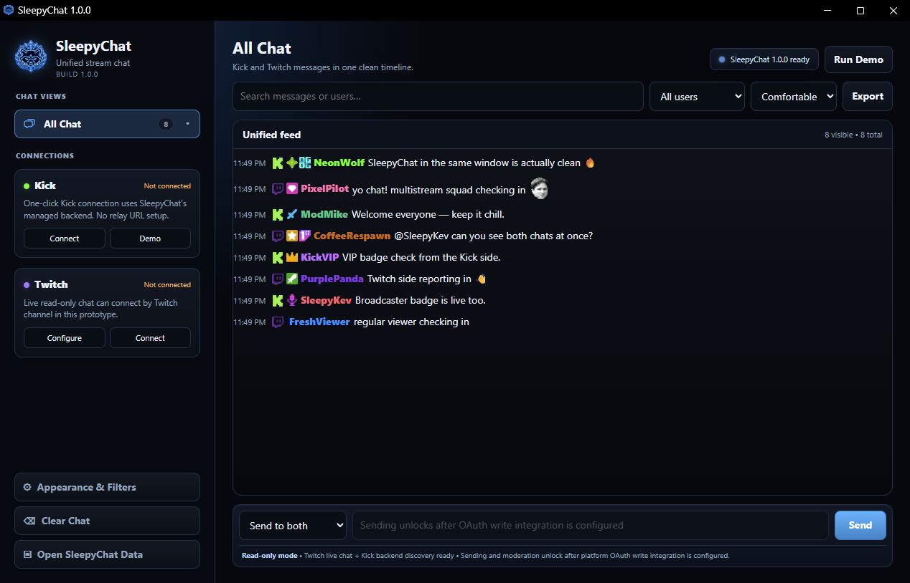

PLATFORMWindows
PRICEFree
FOCUSLive chat
PLATFORMSTwitch + Kick
A focused Windows chat companion that keeps Twitch and Kick conversations together in one clean interface.

A lighter companion for creators who want chat without extra streaming-tool clutter.
Keep supported Twitch and Kick conversations together in one view.
Focus on a single platform when you only want one conversation visible.
Keep recognizable names, badges, colors, and emotes visible where supported.
See whether chat services are connected and recover from interruptions cleanly.
Keep up with active chat without losing control of the conversation.
A dark, focused interface designed to stay readable while live.
Use the SleepyHub support page for troubleshooting steps, reporting guidance, and official project links.